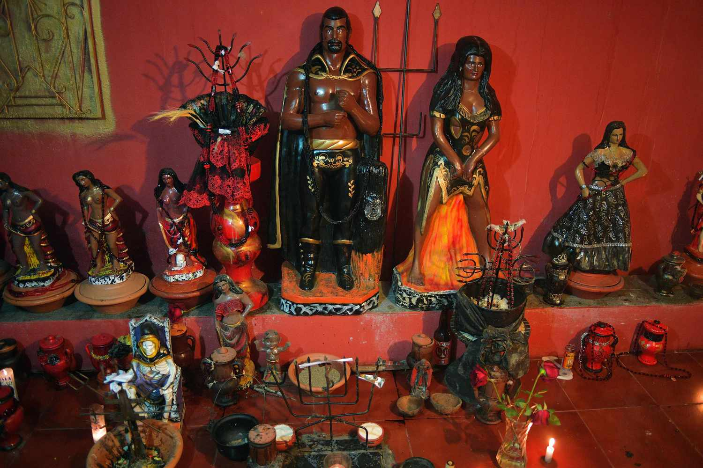
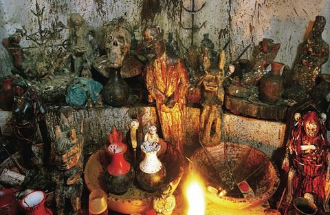
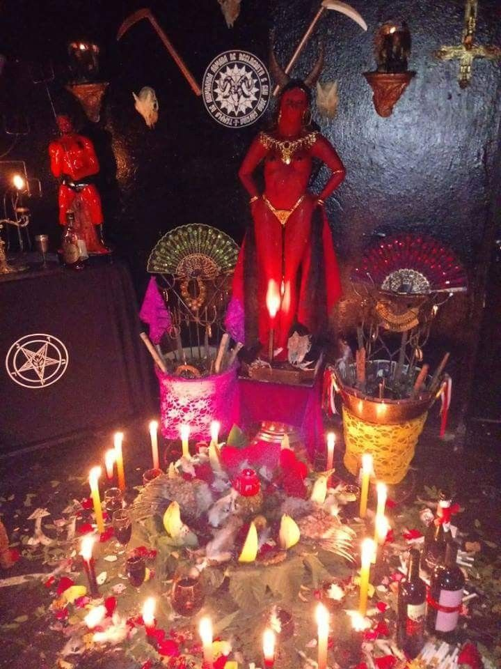

Quimbanda: Origem, Tradições, Costumes, Banhos e Saudações
Origem e História da Quimbanda
A Quimbanda é uma manifestação religiosa afro-brasileira com raízes profundas na cultura e mitologia Bantu, originária principalmente da região de Angola e do Congo. O termo "Quimbanda" deriva da palavra "Kimbanda" na língua Quimbundu (ou Mbundu), falada pelo povo Bantu, e significa "curador", "xamã" ou "aquele que se comunica com o além". Na África, os sacerdotes chamados Quimbandas eram curandeiros que evocavam espíritos e prestavam serviços essenciais às suas comunidades.
A história da Quimbanda no Brasil está intrinsecamente ligada ao período da escravidão, quando africanos escravizados trouxeram consigo suas tradições espirituais e práticas religiosas. Sem o apoio da medicina ocidental, os Quimbandas utilizavam seus conhecimentos da natureza e dos recursos naturais para diagnosticar, prevenir, tratar e curar doenças, assegurando a saúde pública em suas comunidades de origem.
No Brasil, a Quimbanda desenvolveu características próprias, adaptando-se ao novo contexto e incorporando elementos de outras tradições. Sua definição e classificação ainda são controversas no campo religioso brasileiro. Por vezes, é considerada uma religião autônoma; em outras interpretações, é vista como uma "Linha de Trabalho" (Linha de Esquerda) da Umbanda e do Candomblé. Esta divergência de interpretações reflete a complexidade e a riqueza das tradições religiosas afro-brasileiras, que não possuem organizações ou documentações que regem de forma unificada suas práticas.
A associação da Quimbanda como uma "linha" da Umbanda ganhou força principalmente após o advento da Umbanda organizada pela tradição de Zélio de Moraes, no início do século XX. Nesse contexto, o termo "Quimbanda" passou a ser usado, muitas vezes pejorativamente, para descrever trabalhos espirituais que eram negados pelos preceitos da Umbanda de corte espírita e católico. Esta visão contribuiu para a estigmatização da Quimbanda, que passou a ser associada erroneamente a práticas maléficas ou à chamada "magia negra".
No entanto, pesquisas acadêmicas recentes, como as publicadas no periódico "Psicologia USP", revelam que muitos praticantes consideram a Quimbanda uma religião em si, e não apenas uma vertente da Umbanda. Essa perspectiva valoriza a autonomia e a legitimidade da Quimbanda como expressão religiosa própria, com suas tradições, rituais e cosmovisão específicos.
É importante destacar que a divisão entre "direita" e "esquerda" nas religiões afro-brasileiras é produto de um pensamento ocidental, sobretudo cristão, que estabelece uma dualidade entre bem e mal. Na Quimbanda, assim como em outras religiões de matriz africana, essa dualidade não existe da mesma forma. O positivo e o negativo estão presentes em tudo e em todos, incluindo as entidades cultuadas. Esta compreensão mais holística e integrada das forças espirituais é fundamental para entender a essência da Quimbanda.
Fundamentos e Características da Quimbanda
A Quimbanda se caracteriza pelo culto às entidades conhecidas como "Povo da Rua", que se dividem entre Exus (masculinos) e Pombagiras (femininas). Estas entidades são mensageiros e guardiões que vibram nas matas, cemitérios, encruzilhadas e outros locais específicos. Diferentemente da interpretação ocidental que muitas vezes demoniza essas entidades, na cosmovisão da Quimbanda, os Exus e Pombagiras são forças neutras que podem manipular tanto energias positivas quanto negativas, dependendo da intenção e do trabalho realizado.
Os Exus e Pombagiras da Quimbanda trabalham principalmente para o desenvolvimento espiritual das pessoas, com o intuito de evolução espiritual, além de proteção de seu médium. Como são as entidades mais próximas à faixa vibratória dos encarnados, apresentam muitas semelhanças com os humanos, incluindo virtudes e defeitos. Esta proximidade com a experiência humana torna essas entidades particularmente acessíveis e compreensivas das necessidades e desafios enfrentados pelos praticantes.
É importante diferenciar os Exus e Pombagiras de Quimbanda das Kiumbas (ou Quiumbas), que são espíritos obsessores que se mantêm presos à terra por atrasos em sua evolução. As Kiumbas podem, por vezes, se manifestar fantasiados de falsos Exus e Pombagiras, causando confusão e problemas. Os verdadeiros Exus e Pombagiras de Quimbanda atuam contra essas entidades negativas, protegendo seus médiuns e consulentes.
A Quimbanda não adota a divisão maniqueísta entre bem e mal presente em muitas tradições ocidentais. Sua cosmovisão é mais complexa e nuançada, reconhecendo que todas as forças espirituais têm seu lugar e função no equilíbrio do universo. Esta perspectiva mais holística permite uma compreensão mais profunda das dinâmicas espirituais e das relações entre os diferentes planos de existência.
Entidades e Guias Espirituais
Na Quimbanda, as principais entidades cultuadas são os Exus e as Pombagiras, que formam o chamado "Povo da Rua". Estas entidades são organizadas em diferentes falanges ou linhas, cada uma com características e áreas de atuação específicas.
Exus
Os Exus são entidades masculinas que atuam como guardiões, mensageiros e protetores. São conhecidos por sua força, determinação e capacidade de resolver problemas práticos. Alguns dos principais Exus cultuados na Quimbanda são:
Exu Maioral (Lucifer): Considerado o chefe de todos os Exus, é uma entidade de grande poder e sabedoria.
Exu Tranca Ruas: Guardião das encruzilhadas e dos caminhos, é conhecido por sua capacidade de abrir ou fechar caminhos.
Exu Sete Encruzilhadas: Trabalha nas encruzilhadas de sete ruas, é um grande conhecedor dos mistérios espirituais.
Exu Marabô: Entidade guerreira, conhecida por sua força e determinação.
Exu Tiriri: Trabalha principalmente em cemitérios, lidando com questões relacionadas à ancestralidade e à morte.
Exu Caveira: Também associado aos cemitérios, é conhecido por sua capacidade de lidar com energias densas e transformá-las.
Exu Mirim: Representado como uma criança, é conhecido por sua esperteza e agilidade.
Pombagiras
As Pombagiras são entidades femininas que representam a força, a independência e a sensualidade feminina. São conhecidas por sua sabedoria em questões amorosas e por sua capacidade de empoderar as mulheres. Algumas das principais Pombagiras cultuadas na Quimbanda são:
Maria Padilha: Uma das Pombagiras mais conhecidas, é associada à paixão, ao amor e à sensualidade.
Maria Mulambo: Trabalha com as energias de transformação e renovação, ajudando a superar dificuldades materiais.
Pombagira Sete Saias: Conhecida por sua alegria e sensualidade, é associada à dança e à celebração da vida.
Pombagira Cigana: Trabalha com questões relacionadas à prosperidade, vidência e amor.
Pombagira Rainha das Sete Encruzilhadas: Entidade de grande poder, associada às encruzilhadas e aos caminhos da vida.
Pombagira Rosa Caveira: Trabalha em cemitérios, lidando com questões relacionadas à ancestralidade feminina.
Cada Exu e Pombagira tem suas próprias características, preferências e formas de trabalho. Os praticantes da Quimbanda desenvolvem relações pessoais com essas entidades, aprendendo a reconhecer suas energias e a trabalhar em parceria com elas para o desenvolvimento espiritual e a resolução de problemas.
Rituais e Cerimônias
Os rituais da Quimbanda são realizados em locais chamados terreiros, tendas ou casas. As cerimônias são conduzidas por um dirigente espiritual, geralmente chamado de pai ou mãe de santo, que é responsável pela organização dos trabalhos e pela orientação dos médiuns.
Giras
As giras são as principais cerimônias da Quimbanda. São reuniões onde os médiuns incorporam as entidades para realizar trabalhos espirituais. As giras de Quimbanda são geralmente realizadas à noite, em locais específicos como encruzilhadas, cemitérios ou dentro dos terreiros, dependendo do trabalho a ser realizado.
Uma gira típica de Quimbanda segue um roteiro que inclui:
Abertura: Orações e pontos cantados (cantigas) para proteção do terreiro e chamada das entidades guardiãs.
Defumação: Utilização de ervas e incensos específicos para purificar o ambiente e os participantes.
Pontos cantados: Cantigas específicas para chamar os Exus e Pombagiras que irão trabalhar na sessão.
Incorporação: Momento em que os médiuns recebem as entidades.
Consultas e trabalhos: As entidades incorporadas atendem às pessoas que buscam orientação, conselhos ou tratamentos espirituais, e realizam os trabalhos necessários.
Encerramento: Pontos cantados de despedida das entidades e orações finais para proteção dos participantes.
Oferendas
A entrega de oferendas é uma prática fundamental na Quimbanda. As oferendas são formas de agradecer, homenagear e fortalecer o vínculo com as entidades. Cada Exu e Pombagira tem suas preferências específicas, que podem incluir:
Bebidas: Cachaça (Marafo), uísque, vinho, champanhe, conhaque, entre outras.
Alimentos: Farofa, carne, frutas, doces, mel, entre outros.
Tabaco: Charutos, cigarros, cigarrilhas, cachimbos.
Velas: De diferentes cores, dependendo da entidade e do trabalho a ser realizado.
Objetos: Moedas, joias, perfumes, entre outros itens que agradam às entidades.
As oferendas são geralmente depositadas em locais específicos, como encruzilhadas, cemitérios, matas ou praias, dependendo da entidade e do trabalho realizado. É importante ressaltar que as oferendas devem ser feitas com respeito ao meio ambiente, utilizando materiais biodegradáveis e evitando poluição.
Banhos Rituais
Os banhos rituais são uma parte importante das práticas da Quimbanda. São utilizados para limpeza espiritual, proteção, abertura de caminhos e equilíbrio energético. Os principais tipos de banhos utilizados na Quimbanda são:
Banho de Descarrego: Utilizado para limpar energias negativas e influências espirituais indesejadas. Geralmente contém ervas como arruda, guiné, espada-de-são-jorge, comigo-ninguém-pode, pimenta e sal grosso.
Banho de Proteção: Para criar um campo de proteção espiritual contra energias negativas e trabalhos de magia. Utiliza ervas como arruda, alecrim, manjericão, guiné e sal grosso.
Banho de Abertura de Caminhos: Para remover obstáculos e atrair oportunidades. Pode conter ervas como canela, louro, alecrim, manjericão e mel.
Banho de Atração: Para atrair amor, prosperidade ou outras energias positivas. Utiliza ervas como canela, cravo, louro, manjericão, alecrim e mel.
Banho de Firmeza: Para fortalecer o médium e prepará-lo para os trabalhos espirituais. Contém ervas específicas para cada entidade com a qual o médium trabalha.
Os banhos podem ser preparados de diferentes formas, mas geralmente envolvem a maceração ou infusão das ervas em água. Podem ser utilizados para banhar o corpo inteiro ou apenas partes específicas, como a cabeça e os ombros. Alguns banhos são acompanhados de orações específicas e devem ser realizados em dias e horários determinados, de acordo com o trabalho a ser realizado.
Saudações aos Exus e Pombagiras
As saudações são formas de reverenciar e estabelecer conexão com os Exus e Pombagiras. Cada entidade tem suas próprias saudações, que podem variar de acordo com a tradição do terreiro. Algumas das principais saudações utilizadas na Quimbanda são:
Exu Maioral: "Laroyê Exu!" ou "Salve Lucifer!"
Exu Tranca Ruas: "Laroyê Tranca Ruas!" ou "Tranca Ruas é Mojubá!"
Exu Sete Encruzilhadas: "Laroyê Sete Encruzilhadas!" ou "Salve as Sete Encruzilhadas!"
Maria Padilha: "Laroyê Maria Padilha!" ou "Salve Maria Padilha!"
Maria Mulambo: "Laroyê Mulambo!" ou "Salve Rainha Mulambo!"
Pombagira Sete Saias: "Laroyê Sete Saias!" ou "Salve as Sete Saias!"
Além das saudações verbais, existem gestos específicos para cada entidade, como o cruzamento dos braços sobre o peito, o sinal da cruz invertida ou gestos que simbolizam as características específicas de cada Exu ou Pombagira.
Símbolos e Elementos Rituais
A Quimbanda utiliza diversos símbolos e elementos em seus rituais:
Pontos Riscados: São símbolos desenhados no chão com giz ou pemba (giz ritual) que representam a assinatura vibratória de um Exu ou Pombagira. Servem para invocar energias específicas e demarcar espaços sagrados.
Tridentes: Símbolo associado aos Exus, representa o poder e a capacidade de transitar entre diferentes planos de existência.
Guias e Colares: São colares de contas coloridas que representam as entidades. Na Quimbanda, predominam as cores vermelha e preta, associadas aos Exus, e vermelha e rosa, associadas às Pombagiras.
Atabaques: São tambores utilizados para marcar o ritmo dos pontos cantados. O som dos atabaques ajuda a criar o ambiente propício para a incorporação das entidades.
Pemba: É um giz ritual utilizado para desenhar os pontos riscados. Pode ser de várias cores, cada uma associada a uma entidade ou trabalho específico.
Velas: São utilizadas para iluminar o ambiente espiritual e como oferenda aos Exus e Pombagiras. Cada cor de vela tem um significado específico.
Ervas: São utilizadas em banhos, defumações e trabalhos espirituais. Cada erva tem propriedades específicas e está associada a determinadas entidades.
Ética e Conduta na Quimbanda
A Quimbanda, como qualquer tradição espiritual séria, possui princípios éticos que orientam a conduta de seus praticantes. Embora muitas vezes estigmatizada e associada erroneamente a práticas maléficas, a verdadeira Quimbanda é guiada por valores como:
Respeito: Valorização das entidades, dos ancestrais e das tradições espirituais.
Equilíbrio: Busca pela harmonia entre as diferentes forças e energias do universo.
Responsabilidade: Compreensão das consequências de cada ação espiritual e material.
Conhecimento: Valorização do aprendizado contínuo e da transmissão dos saberes tradicionais.
Proteção: Compromisso com a proteção espiritual dos praticantes e consulentes.
Evolução: Busca pelo crescimento espiritual e pelo desenvolvimento das potencialidades humanas.
É importante destacar que a Quimbanda não promove práticas que visam causar mal a outras pessoas. Os trabalhos realizados têm como objetivo principal a proteção, a cura, a abertura de caminhos e o desenvolvimento espiritual. Qualquer uso da Quimbanda para fins negativos representa uma distorção de seus verdadeiros princípios e valores.
A Quimbanda na Sociedade Brasileira
A Quimbanda, assim como outras religiões de matriz africana, enfrenta desafios significativos na sociedade brasileira, marcada por um histórico de racismo e intolerância religiosa. A estigmatização da Quimbanda como "magia negra" ou prática maléfica reflete preconceitos arraigados e uma falta de compreensão de suas verdadeiras tradições e valores.
No entanto, nos últimos anos, tem havido um movimento crescente de valorização e reconhecimento das religiões afro-brasileiras como parte importante do patrimônio cultural e espiritual do Brasil. Pesquisadores, acadêmicos e praticantes têm trabalhado para desmistificar a Quimbanda e outras tradições afro-brasileiras, promovendo uma compreensão mais profunda e respeitosa de suas práticas e crenças.
A Quimbanda representa uma forma de resistência cultural e espiritual, preservando conhecimentos ancestrais e oferecendo caminhos de conexão com forças espirituais que podem contribuir para o bem-estar e o desenvolvimento humano. Seu reconhecimento e respeito são fundamentais para a construção de uma sociedade mais plural e inclusiva, que valorize a diversidade religiosa e cultural como uma de suas maiores riquezas.